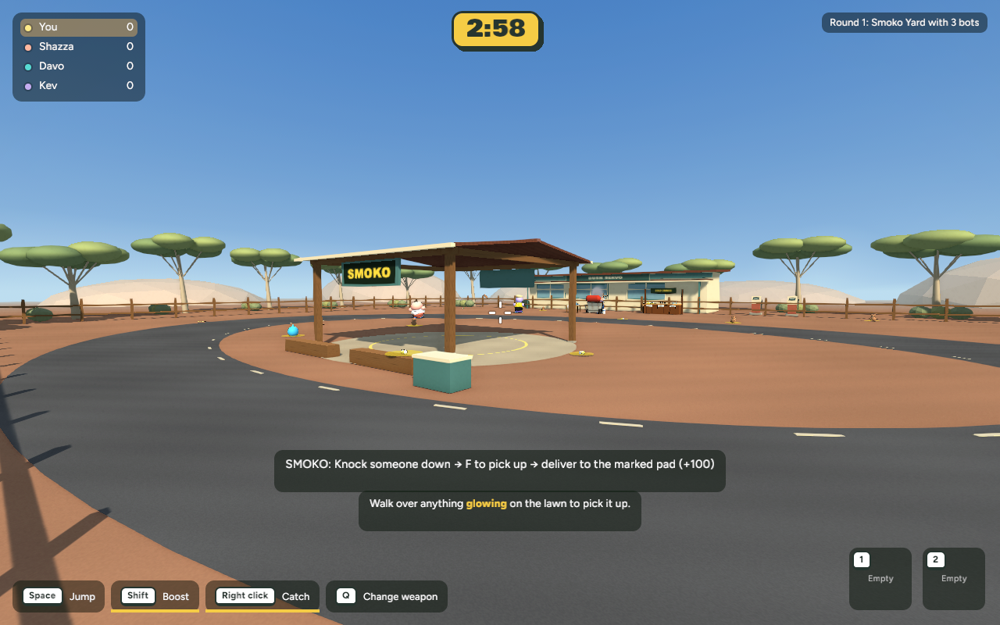
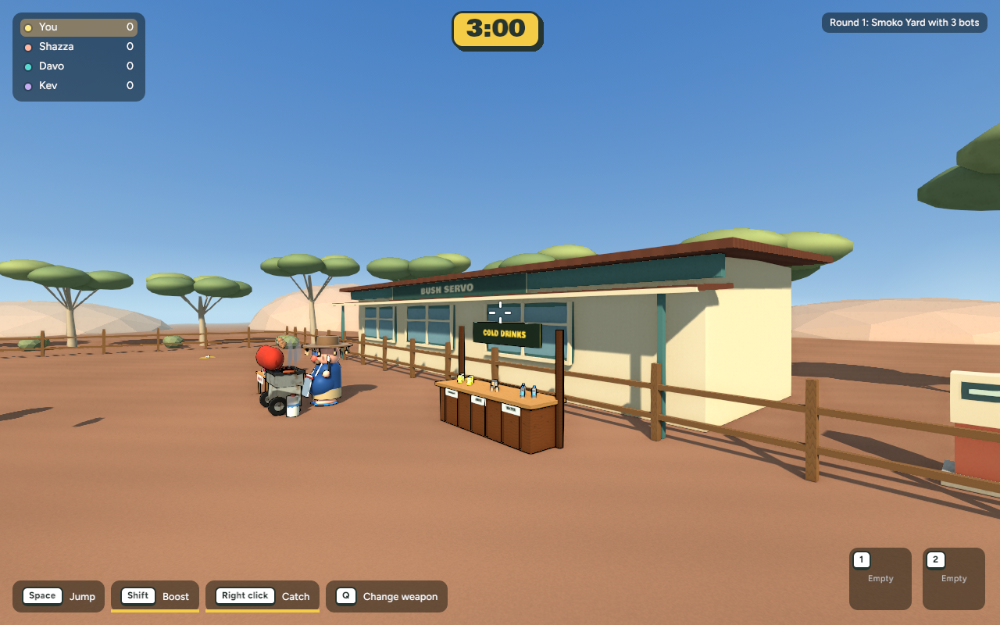

AUSTRALIAN BBQ · 25 OCTOBER 2026 · AWAITING REVIEWSmoko: Bush Servo
Actual running game captures. A separate red-earth setting with a curved road, central shelter and servo frontage. This is the first implemented section, not the finished concept-art quality target.

Same-camera comparison
Choose the view, then switch between the original shared Backyard and the separate Smoko setting.
Bush Servo · gameplay

Shelter, delivery and frontage
Delivery sequence
Controlled native fixture uses the actual carry/throw systems. Final score +100; no remaining carry.
Moving camera
Continuous road mesh removes the seams found in the first visual check.
Servo frontage

Browser selection and running game
Verification and performance
673 tests pass. Native and browser builds pass. Existing modes launch successfully; host/guest collision reconstruction is covered by tests. Live multi-computer multiplayer was not retested.
| Matched view | Before mean / p95 | Bush Servo mean / p95 |
|---|
| Overview | 8.013 / 11.762 ms | 7.403 / 13.163 ms |
| Gameplay | 8.250 / 11.756 ms | 7.519 / 12.345 ms |
600 wall-clock samples per view at 1280×800 on this Mac. Means improve; p95 rises slightly but remains below 16.67 ms. Not a GPU benchmark or browser performance guarantee.
Scope before the next pass
The curved road sits inside the existing fenced play bounds. Dirt does not slow players. Scoring, pickup supplies and carry/throw rules are unchanged. The servo is a backdrop; the shelter canopy is visual overhead detail, while its posts, benches and esky are solid. Detailed vehicles, rockwork, richer vegetation/material wear and the other Smoko maps are not part of this first section.
Checkpoint, verified backup and recovery instructions · Changed files
cd /Users/marcus/Claude/australian-bbq/rust
~/.cargo/bin/cargo run -p bbq_app --release -- --mode smoko --look polished --style pop
Nothing committed or pushed. Review this direction before the next stage.